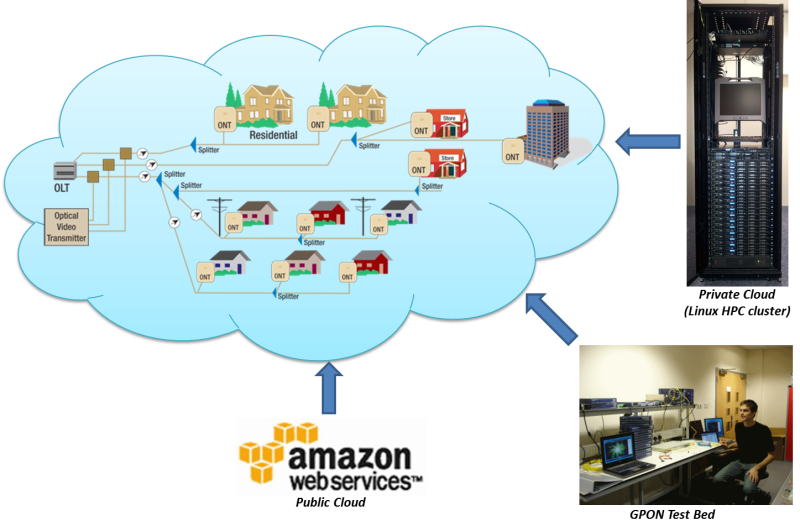

Clean-Slate Design of Next-Generation Optical Access (NGOA)
Table of Contents
People
Faculty
Students
- Mr Marcelo Zannin da Rosa
- E-mail: marcelo.z.rosa\_at\_gmail.com
- Mr Solomon Mangeni
- E-mail: S.W.Mangeni\_at\_swansea.ac.uk
Partners
- Amazon (Amazon Web Services (AWS) in Education Research Grant)
Equipment and Facilities

- 1.25 Gb/s GPON testbed
- Private cloud: Dell Linux HPC cluster
- 1 head + 16 computing nodes; each computing node with 2-GHz, 6-core Intel Xeon E5-2620 processor and 32-GB memory (i.e., 192 logical cores and 512-GB memory in total)
- Public cloud: Amazon Elastic Compute Cloud (Amazon EC2)
Executive Summary
We have been investigating the issues of quality of experience (QoE), elasticity1, and energy efficiency in NGOA with a focus on the solutions beyond 10G-EPON/XG-PON (i.e., NG-PON2 by ITU-T) and found out that the progress in the clean-slate design of NGOA has been impeded by the absence of a comprehensive research framework for a comparative analysis of candidate network architectures and protocols.
We propose, therefore, a research programme for the clean-slate design of NGOA with the following major objectives:
- A new comparative analysis framework based on statistical hypothesis testing and user-perceived performances;
- User behaviour modelling for future services and applications;
- Virtual test bed for experiments under a realistic operating environment;
- Energy-efficient and elastic components and architectures.
The results of the proposed research programme will not only enable researchers to carry out a fair and objective comparison of various candidate architectures and protocols, but also allow network operators & service providers to dimension their future NGOA under a realistic environment through the virtual test bed.
Proposed Research and its Context
Background
One of the major questions within the optical networking community now is not whether we should deploy the optical access, but when and how we should. The choice of network architecture, therefore, becomes a critical concern. In selecting network architecture for next-generation optical access (NGOA), a fundamental question is user bandwidth requirement: How much bandwidth will be enough to meet user demands for future services and applications? In fact, specifying the user bandwidth requirement is a complicated task. For example, when we are talking about "10-Gb/s access", it is not clear whether this means 10 Gb/s per user in a non-contentious way or not. Also, 10-Gb/s line rate in the access is a necessary but not a sufficient condition because some degree of contention can exist at various points in the network. If we limit our focus on the access side, the original question becomes What does 10-Gb/s access means at the user side? To answer this question, we need a quantifiable and measurable definition of user bandwidth requirement. The answer to this question will not only decide whether we can use shared architectures, which can provide many benefits from sharing of network resources, but also enable us to quantify the advantages of one architecture against the other. Note that most existing work in optical access has focused on technical issues in physical and data link layers only and hardly taken into account the upper layers and application- and user-level performances. On the other hand, many of the study on services & applications, network traffic, and higher layer protocols do not consider much the lower layer issues.
Academic Impact
A new comprehensive research framework and a way to carry out experiments under it through a virtual test bed will provide researchers with a standard methodology to evaluate the performances of their proposed architectures and protocols and compare them with those from others in an objective and systematic way.
- The resulting metric (see the research programme below for details) will serve as a benchmark among candidate systems (as in computing industry).
- A virtual test bed will be implemented as open-source simulation framework & models and, as such, available to all researchers in both Academia and Industry.
Research Hypothesis and Objectives
Programme and Methodology
We tackle the problem of quantifying user bandwidth requirement for the NGOA in objective and fair assessment of candidate architectures. We will base our work on the equivalent circuit rate (ECR) framework2, a quantitative analysis framework based on the end-user experiences capturing the impact of the whole network protocol stack as well as network architecture itself, and implement a virtual test bed for realistic simulation of candidate architectures.
The major objectives are:
- To develop a quantifiable and measurable definition of user bandwidth requirement;
- To implement a virtual test bed capturing all the important aspects from the physical layer to the application layer to end-user behavior;
- To investigate power and cost issues of architectures based on the developed measure and the virtual test bed.
We recently reported initial results on this work2,3,4,5,6: We have developed a systematic ECR calculation procedure and application-level traffic models for web browsing, file downloading, and streaming video; we have also carried out a comparison study with a dedicated reference architecture and hybrid TDM/WDM-PON.
Two major challenges identified from the initial work are (1) the need of huge computing power for a series of large-scale simulations and (2) the development of end-user behavioral models.
As for the computing power, note that it took several months to finish the whole simulation with a Linux cluster with 22 nodes, each with 8-GB memory and a 2-GHz 8-core Intel Xeon CPU. The computing power from Amazon EC2 could greatly reduce the run time in this regard.
As for the end-user behavior, we will first build a demographic and behavioral user profile by focusing on groups for initial exploration and surveying large-scale data collection. Then we will build end-user behavioral models governing underlying application-level traffic models based on the developed profile, which can capture the difference between business & residential users and temporal aspects of end-user behaviors.
Pathways to Impact
The proposed NGOA research framework (i.e., comparative analysis framework + virtual test bed) enables network service providers (e.g., BT) to not only assess various candidate systems under a realistic operating environment but also dimension their networks before actual deployment.
The proposed research programme has been inspired (e.g., economy of scale, elasticity) and enabled (i.e., large-scale, on-demand computing on Amazon EC2) by the cloud computing; its outcome, therefore, will have a valuable impact on the providers of NGOA and\/or cloud computing.
The quantification of user-perceived performances (i.e., ECR) provides valuable information for both network service providers and customers to compare various solutions in a fair basis, like benchmarks in computing.
A new revenue model based on predicted user demands reduces the risk of huge investment requested for the deployment of NGOA solutions.
Footnotes:
The elasticity in the context of networking means the ability to manage overall performances by fast provisioning of network resources based on user demands.
Kyeong Soo Kim, "A research framework for the clean-slate design of next-generation optical access," (Extended version of the FOAN 2011 paper) accepted for publication in Fiber and Integrated Optics Special Issue on QoS in Access Networks, Jan. 2012. (HNRL)
Kyeong Soo Kim, "A research framework for the clean-slate design of next-generation optical access," (Best Paper Award at FOAN 2011) Proc. of the 3rd International Congress on Ultra Modern Telecommunications and Control Systems (ICUMT 2011), Budapest, Hungary, Oct. 2011. (HNRL)
Kyeong Soo Kim, Karin Ennser, and Yogesh K. Dwivedi, "Clean-slate design of next-generation optical access," (Invited paper) Proc. of the 13th International Conference on Transparent Optical Networks (ICTON), Stockholm, Sweden, Jun. 2011. (HNRL)
Karin Ennser, "Next generation access: A clean-slate approach?", (Invited Talk) Midterm Workshop of FP7 Integrated Project OASE: Optical Access Seamless Evolution, June 26 - 30, 2011, Stockholm, Sweden.